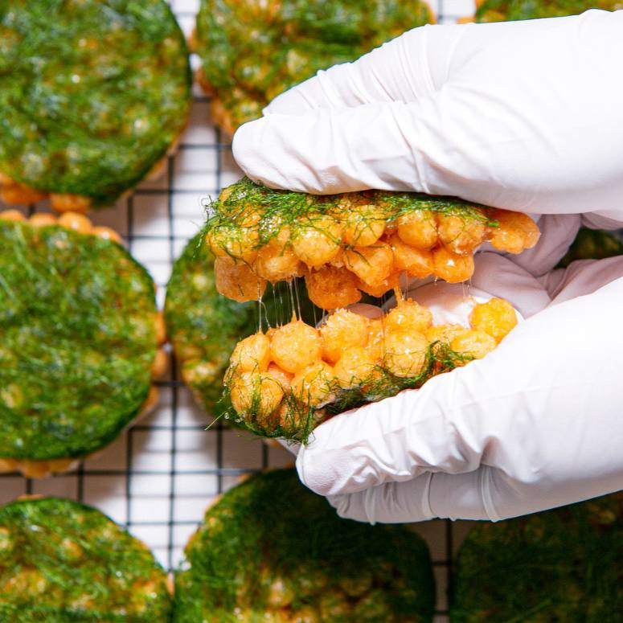
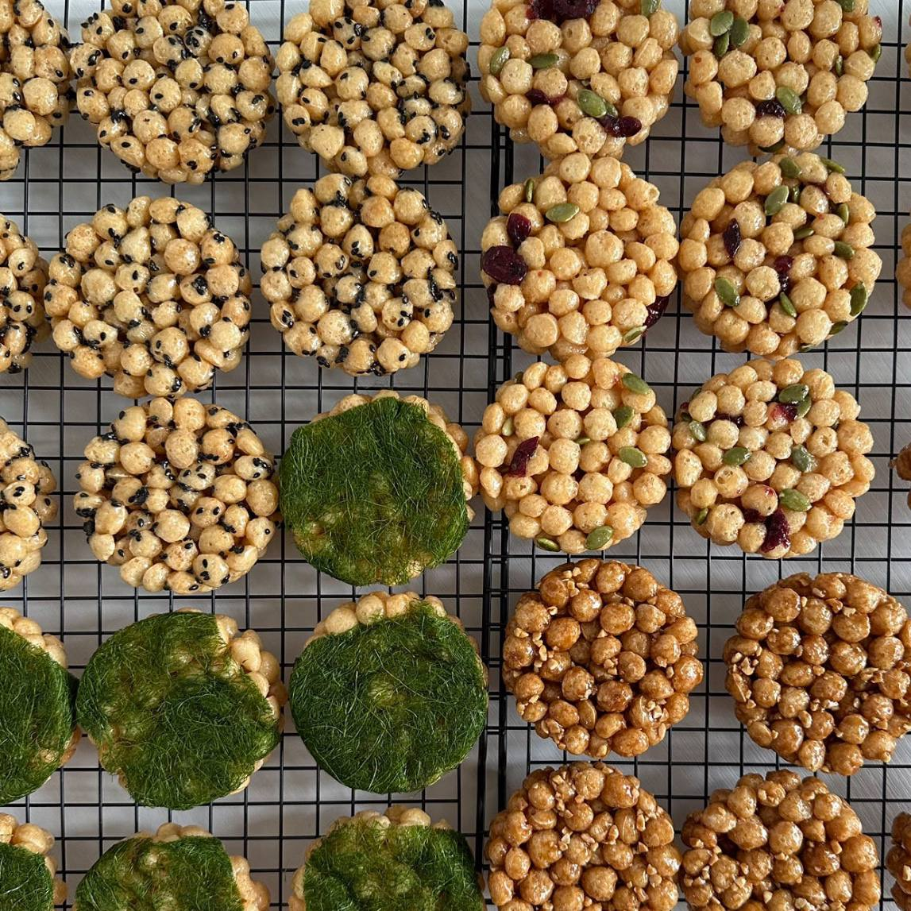
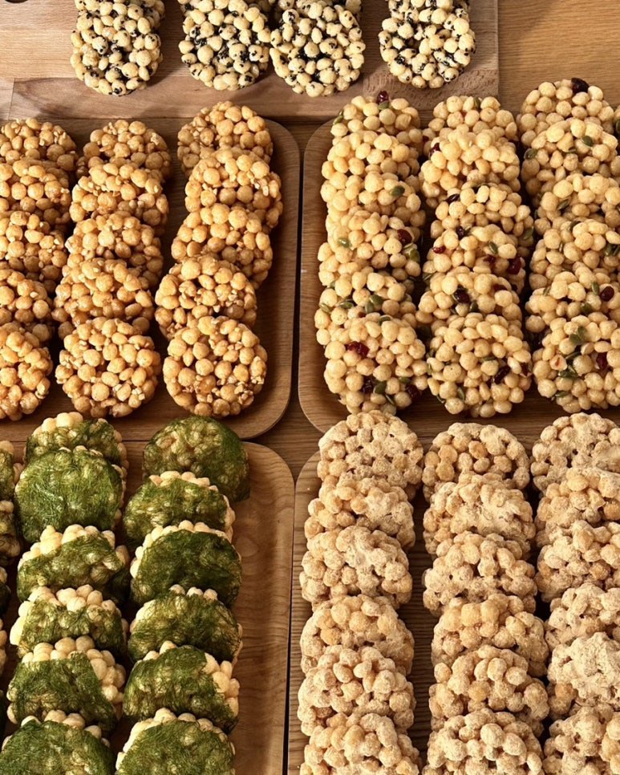

Watch the rice syrup stretch as you pull it apart — this is no ordinary snack.
Handcrafted from domestically grown puffed rice, glutinous rice, and barley, bound with 100% rice syrup.
No wheat flour. No butter. No preservatives. Just pure rice goodness.


Whole premium sea lettuce wrapped around crispy rice puffs. A savory-sweet ocean bite.
Sweet-tart cranberries + nutty pumpkin seeds. Deeper flavor with every bite.
Subtle roasted coffee aroma meets rich peanuts. A grown-up treat.
Generous Korean black sesame coating. Sweet, nutty, and deeply satisfying.
Roasted soybean powder coating. One bite transports you to grandma's kitchen.
| Set | Price |
|---|---|
| 6pc with Bojagi wrap | ₩15,400 |
| Value 1-tier 10pc | ₩20,000 |
| Value 2-tier 20pc | ₩40,000 |
| Value 3-tier 30pc | ₩60,000 |
| Standard 18pc | ₩34,200 |
| Standard 24pc | ₩45,600 |
※ Holiday band included · Bojagi wrap additional (+₩5,000)